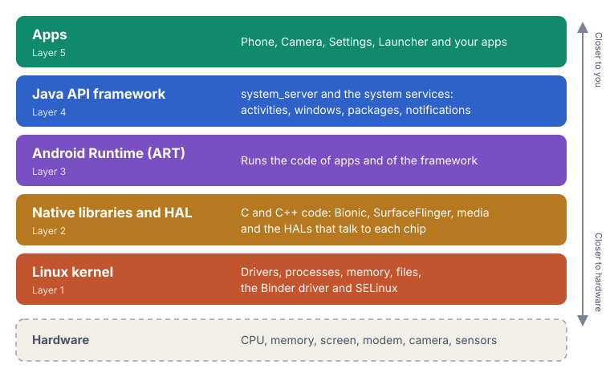

AOSP is the open-source code of Android. Phone makers use it to make the software for their phones.
You use Android every day. But what is inside it? In this course, we open Android layer by layer. We start at the bottom, with the first code that runs when you push the power button. We stop at the top, with the apps on your screen.
This first chapter gives you the map. Each later chapter zooms in on one part of the map.
Android and AOSP are not the same
AOSP means Android Open Source Project. It is the source code of Android that all people can read, change and use. Google writes most of this code and publishes it.
The Android on your phone has more parts than AOSP. It has three parts:
- AOSP: the base system. All Android phones share it.
- Google apps and services: for example, the Play Store, Gmail and Google Play services. These are not open source. Phone makers get them under a separate contract with Google.
- Parts from the phone maker: drivers for the chips of the phone, a custom look and extra apps.
Some products use only AOSP and no Google apps. Examples are some custom ROMs, many TV boxes and many devices in factories and cars. Their makers use AOSP as a free base.
Think of AOSP as the frame and the engine of a car. The design is free, and all car makers can use it. Each maker adds its own body, seats and paint. One company also sells a navigation system and a music service. Many makers buy them and put them in the car. Those extras are the Google apps.
The five layers
Android is a stack of layers. Each layer gives services to the layer above it. Each layer uses the layer below it. The picture shows the five layers. We use the same colors for these layers in all the diagrams on this site.

1. The Linux kernel
The kernel is the lowest software layer. It controls the hardware directly. It starts and stops processes, and it gives memory to each process. It also holds the drivers for the screen, the camera and the modem. Android adds some special parts to Linux. The most important part is the Binder driver, which lets processes send messages to each other.
2. Native libraries and the HAL
This layer is C and C++ code. It has the C library of Android, which has the name Bionic. It also has programs that do heavy work, for example SurfaceFlinger, which puts the image on the screen.
The HAL (hardware abstraction layer) is also here. Each phone has different chips. The HAL gives the same interface for each type of chip. Thus, the upper layers do not need to know the brand of the camera chip.
3. The Android Runtime (ART)
Developers write most apps in Java or Kotlin. The build tools change this code into DEX files. ART reads the DEX files and runs them. ART also changes hot code into fast machine code, and it frees memory that the app does not use.
4. The Java API framework
This is the layer that app developers know. It has the classes like Activity, Intent and NotificationManager. Most of the real work happens in one large process, system_server. This process holds about one hundred system services. Each service controls one part of the phone, for example windows, packages or power.
5. Apps
At the top are the apps. The home screen, the Settings app and the status bar are apps too. They use the same framework as your apps. Some of them have more permissions.
One tap, through all the layers
A good way to learn the stack is to follow one action. Here is what happens when you tap an app icon on the home screen. Each step is a full chapter later in this course.
- The kernel gets the touch. The touch screen driver tells the kernel the position of your finger.
- The input system finds the window. Native code reads the touch and sends it to the window under your finger. Here, that is the home screen app.
- The home screen app asks for the new app. It sends an intent to the framework. The message travels through Binder.
- The framework starts a process. A system service in
system_serverasks Zygote for a new process. Zygote is a parent process that has the common code ready in memory. - ART runs the app. ART loads the code of the app and calls its first methods.
- The app draws its first screen. SurfaceFlinger puts the image on the display. You see the app.
All of this takes less than one second. In the next chapters, we slow it down and look at each step.
Each layer adds a wall. These are the main walls:
- App sandbox. Each app gets its own Linux user ID. Thus, the kernel does not let one app read the files of a different app.
- SELinux. A set of rules in the kernel tells each process what it can do. A process cannot do actions outside its rules, even with root access.
- Permissions. The framework checks if an app has permission before it gives access to the camera, location or contacts.
- Verified boot. At start, each stage examines the next stage. If a person changed the system, the phone shows a warning or does not start.
AOSP is open, so attackers can read the code. But defenders can read it too. Google publishes a security bulletin each month with the security problems that it repaired.
For the curious: the source tree Optional
The AOSP source is not one Git repository. It is more than one thousand Git repositories. A tool with the name repo downloads all of them. A manifest file lists each repository and its folder. These are the main top folders:
| Folder | What it holds |
|---|---|
frameworks/ | The Java API framework, system_server and many native services |
system/ | Low-level parts, for example init and the core tools |
art/ | The Android Runtime |
bionic/ | The C library and the dynamic linker |
hardware/ | HAL interfaces and some HAL code |
packages/ | System apps, for example Settings and the launcher |
external/ | Open-source projects from outside Android |
build/ | The build system |
device/ | Settings for each device, for example the emulator |
Most AOSP code uses the Apache 2.0 license. The Linux kernel uses the GPL version 2 license.
Connect a phone with USB debugging on, or start an emulator. Then type these commands on your computer.
# Which Android version is on the device?
adb shell getprop ro.build.version.release
# Which Linux kernel version does it use?
adb shell uname -r
# List some of the processes that run now
adb shell ps -A | head -20In the list of processes, find init (process ID 1), zygote64 and system_server. You will meet each of them in this course.
Key terms
- AOSP
- Android Open Source Project. The open source code of Android.
- Kernel
- The lowest software layer. It controls the hardware, processes and memory.
- HAL
- Hardware abstraction layer. The same interface for different chips.
- ART
- Android Runtime. It runs the code of apps.
- system_server
- The process that holds most system services of the framework.
- Zygote
- The parent process of all apps.
- Binder
- The system that lets processes send messages to each other.